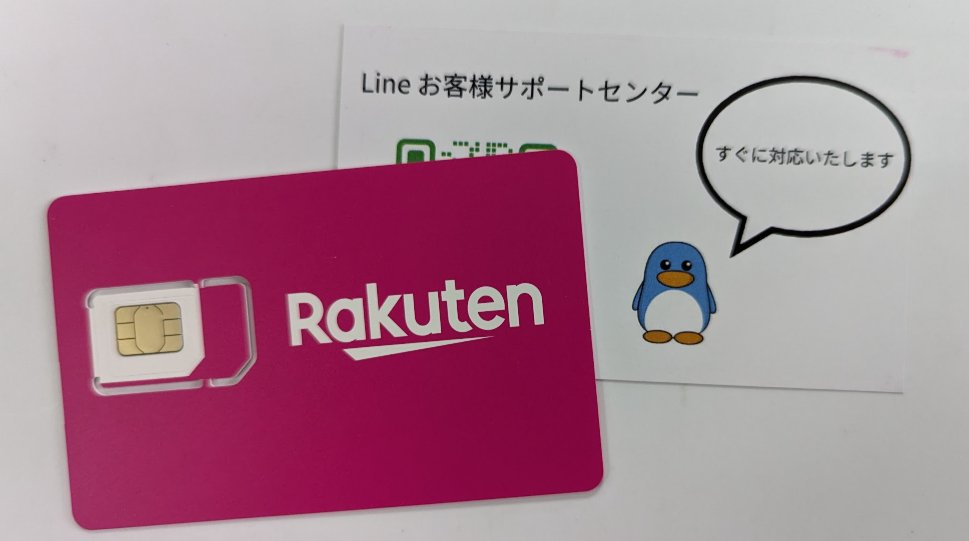
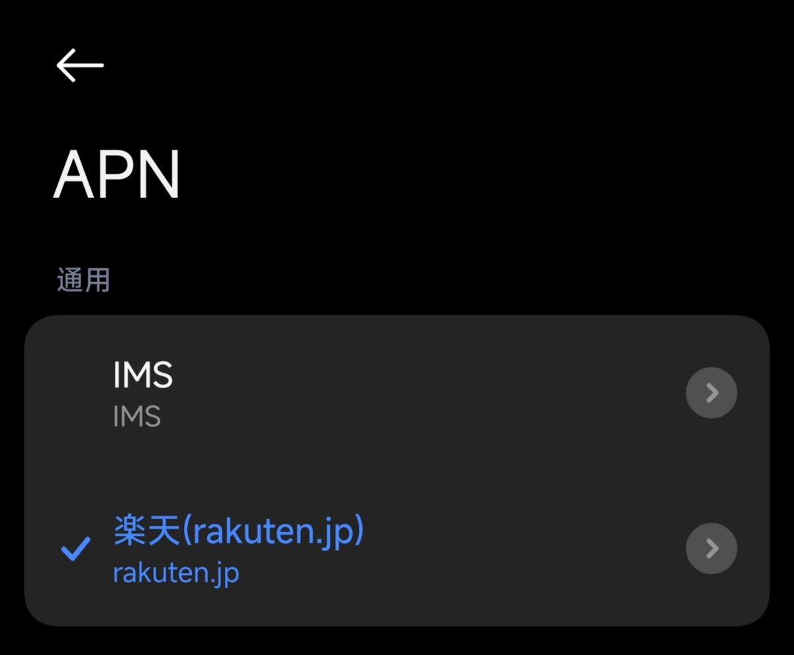
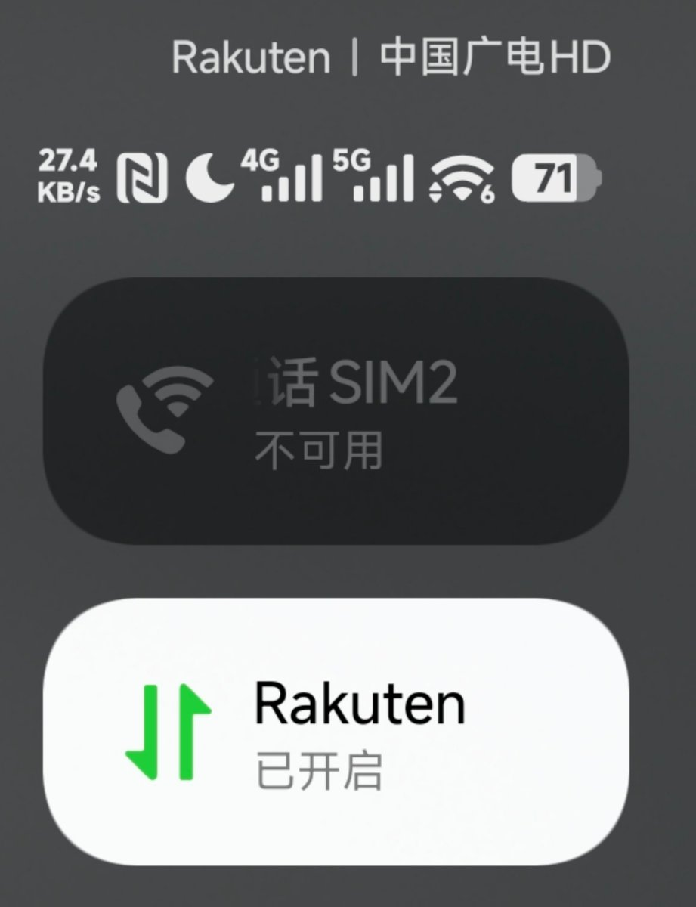
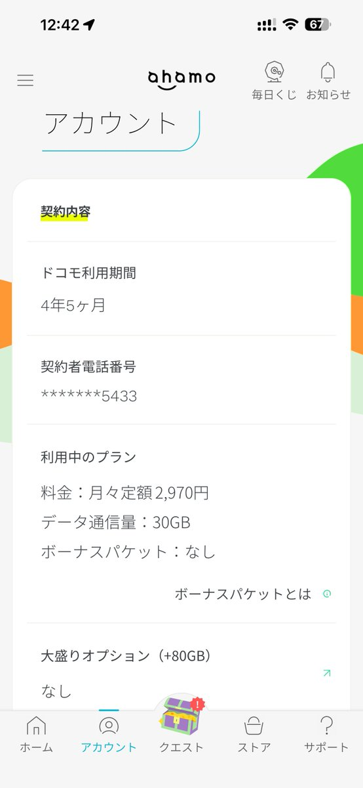

NTT DOCOMO的Ahamo有62国20G通用，但是在日本外使用超过15天就会被限速。
不过借助eSIM，可以申请新的二维码，让在日朋友连一次日本基站重置这个限速，再申请二维码扫回来。毕竟价格不到3k日元，还是蛮有性价比的！
追求漫游无限量那还得是Rakuten（乐天）CALENDAR，一年5980日元，比ifmobile还便宜。原生日本号码，本地流量3G， 漫游流量1G，漫游流量可在中国大陆使用，超出后限速 200Kbps。
更重要的是，它不需要在留卡，应该是以kyb的形式。另外7GB的版本，漫游高速流量从1GB提高到了1.5G，本地流量去日本旅游也够用！

不过借助eSIM，可以申请新的二维码，让在日朋友连一次日本基站重置这个限速，再申请二维码扫回来。毕竟价格不到3k日元，还是蛮有性价比的！
追求漫游无限量那还得是Rakuten（乐天）CALENDAR，一年5980日元，比ifmobile还便宜。原生日本号码，本地流量3G， 漫游流量1G，漫游流量可在中国大陆使用，超出后限速 200Kbps。
更重要的是，它不需要在留卡，应该是以kyb的形式。另外7GB的版本，漫游高速流量从1GB提高到了1.5G，本地流量去日本旅游也够用！




匆匆4年半已过
当初也是受了 Rakuten 的逼迫才推出了这款产品吧？
我最初登陆日本的时候，先用口座签约了 UQ，后来信用卡下来了变更为 softbank，再后来 Rakuten 横空出世，遂换到乐天，没过几日 Docomo 就推出了 Ahamo，那62国无缝漫游不单独收费的20G https://t.co/KUnJSBc0vg
当初也是受了 Rakuten 的逼迫才推出了这款产品吧？
我最初登陆日本的时候，先用口座签约了 UQ，后来信用卡下来了变更为 softbank，再后来 Rakuten 横空出世，遂换到乐天，没过几日 Docomo 就推出了 Ahamo，那62国无缝漫游不单独收费的20G https://t.co/KUnJSBc0vg